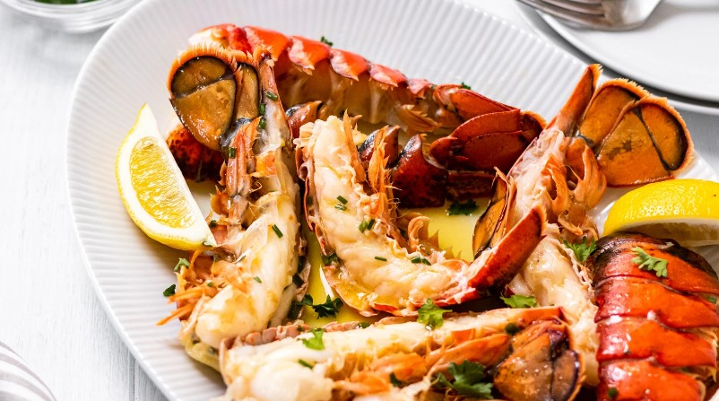

Hello.
I am a passionate Information Technology professional and web developer, dedicated to creating dynamic and user-friendly websites.
My Skills

Design & Development
I began coding fueled by my passion for Information Technology, driven by a desire to explore its vast possibilities and create meaningful solutions. The joy of translating ideas into functional code motivates my journey in the dynamic world of programming.

Lobster Plate
This photo definitely does my favorite dish justice! Look at those glistening red beauties – the succulent lobster meat practically jumps off the screen